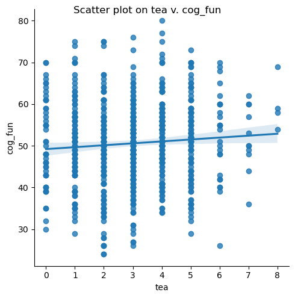
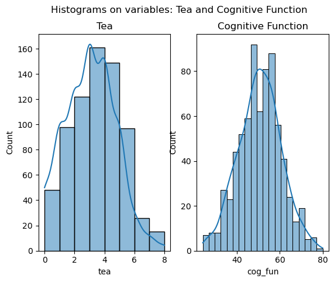

tea cog_fun
count 716.000000 716.000000
mean 3.032123 50.611732
std 1.669245 9.882814
min 0.000000 24.000000
25% 2.000000 44.000000
50% 3.000000 51.000000
75% 4.000000 57.000000
max 8.000000 80.000000Laboratory 05
Context
A researcher enjoys drinking tea when trying to do brain-melting things like studying statistics. He feels that tea helps him think, and he wants to verify whether tea really improves cognitive function. The researcher recruits a large group of respondents and randomly assigns each one with a different number of cups of tea to drink every day 1. After one month, he measures the cognitive function score of each participant and saves the data in tea.sav.
Objectives
- Write down the bivariate regression equation to be estimated. The goal is to study whether tea affects cognitive function.
- Do you think the bivariate regression is a good choice for the data? Why or why not?
- Conduct the bivariate regression analysis using the data. Interpret the intercept and the slope from the raw regression.
- Interpret the slope from the standardized regression. From which regression (raw or standardized) is the slope easier to interpret and understand?
- Predict the cognitive function score of a respondent who drinks 3 cups of tea per day. Do you think your prediction is accurate (close to the truth)?
- Test the hypothesis that tea predicts cognitive function using the regression. Does your result imply any findings about the causal effect of tea on cognitive function?
Solutions
A peek on the dataset as always
Q1: The bivariate regression equation
Answer
Given the independent variable \(X\), the predicted \(\hat Y_{cog\_fun}\) 2 is:
\[ \hat Y_{cog\_fun} = \beta_0 + \beta_1X \]
Q2: Whether bi-variate regression is a good choice for the data
Answer
The bi-variate regression may not be a strong model for this data for:
The Pearson’s Correlation: The Pearson’s correlation coefficient (\(r \approx 0.0777\)) indicates a relatively weak positive relationship between tea consumption and cognitive function. The \(p\)-value (\(p \approx 0.0378\)) is below 0.05, suggesting that the weak correlation is statistically significant.
Linearity and Distribution: The scatter plot in Figure 1 shows that a weak and flat linear relationship between tea consumption and cognitive function, which aligns with the low Pearson’s \(r\). While the histograms in Figure 2 show that the cognitive function scores are approximately normally distributed.
However, the sample size (\(N = 716\)) is relatively large, which may be beneficial for conducting a regression.
Based on this weak linear trend, although bi-variate regression could be employed as they meet the assumption of a linear regression, the model may not explain much variability in cognitive function. Other factors like age, education background even SES may (and must) influence cognitive function. For sake of this assignment, I will assume that other variables either do not vary significantly across participants or are not measured.
Solution
import scipy.stats as stats
tea_pearsonr, tea_pvalue = stats.pearsonr(tea.tea, tea.cog_fun)
print(f'Pearson\'s r: {tea_pearsonr}\n'
f'p-value: {tea_pvalue}')Pearson's r: 0.07765252417388956
p-value: 0.03776954868447832import matplotlib.pyplot as plt
import seaborn as sns
tea_scatter = sns.lmplot(tea, x='tea', y='cog_fun')
tea_scatter.fig.suptitle('Scatter plot on tea v. cog_fun')
plt.show()

fig, ax =plt.subplots(1,2)
sns.histplot(tea, x='tea', kde=True, bins=8, ax=ax[0])
sns.histplot(tea, x='cog_fun', kde=True, ax=ax[1])
ax[0].set_title('Tea')
ax[1].set_title('Cognitive Function')
fig.suptitle('Histograms on variables: Tea and Cognitive Function')
plt.show()

Q3: Bivariate regression analysis
Answer
Intercept: \(\beta_0 \approx 49.2177\), suggests that when a respondent drinks 0 cups of tea per day, the expected cognitive function score is 49.2177.
Slope: \(\beta_1 \approx 0.4597\), indicates a positive relationship between tea consumption and cognitive function. For each additional cup of tea consumed per day, the cognitive function score increases by approximately 0.4597 points.
Solution
def print_linregress(x, y):
b1, b0, r, p, stderr = stats.linregress(x=x, y=y)
print(f'Intercept: {b0}')
print(f'Slope: {b1}')
print(f'R-squared: {r**2}')
print(f'P-value: {p}')
print(f'Standard error: {stderr}')
print_linregress(tea['tea'], tea['cog_fun'])Intercept: 49.217731459509174
Slope: 0.45974402348753085
R-squared: 0.006029914510576479
P-value: 0.03776954868447834
Standard error: 0.22090119534570854In the world of python, scipy.stats works fine for applying basic linear models, however, statsmodels gives you this pretty damn cool all-in-one summary output as shown below:
import statsmodels.api as sm
def bivariate_regression(x, y):
X = sm.add_constant(x)
model = sm.OLS(y, X).fit()
summary = model.summary()
print(summary)
return model
tea_model = bivariate_regression(tea['tea'], tea['cog_fun']) OLS Regression Results
==============================================================================
Dep. Variable: cog_fun R-squared: 0.006
Model: OLS Adj. R-squared: 0.005
Method: Least Squares F-statistic: 4.331
Date: Mon, 28 Oct 2024 Prob (F-statistic): 0.0378
Time: 19:52:27 Log-Likelihood: -2653.5
No. Observations: 716 AIC: 5311.
Df Residuals: 714 BIC: 5320.
Df Model: 1
Covariance Type: nonrobust
==============================================================================
coef std err t P>|t| [0.025 0.975]
------------------------------------------------------------------------------
const 49.2177 0.764 64.382 0.000 47.717 50.719
tea 0.4597 0.221 2.081 0.038 0.026 0.893
==============================================================================
Omnibus: 0.140 Durbin-Watson: 1.912
Prob(Omnibus): 0.932 Jarque-Bera (JB): 0.229
Skew: -0.009 Prob(JB): 0.892
Kurtosis: 2.914 Cond. No. 7.65
==============================================================================
Notes:
[1] Standard Errors assume that the covariance matrix of the errors is correctly specified.Q4: The slope from the standardized regression
Answer
Q4a: Interpret the slope from the standardized regression.
\[\beta^* \approx 0.07765\]
The standardized slope is approximately 0.07765, means that for every one standard deviation increase in tea consumption, the cognitive function score increases by 0.07765 standard deviations.
Q4b: From which regression (raw or standardized) is the slope easier to interpret and understand?
It depends.
The raw slope is easy to interpret in the context of the actual units of measurement as it represents the change in the dependent variable (cog_fun) for a one-unit change in the independent variable (tea).
The standardized slope makes comparing effects across different variables or studies much easier as it tells us how many standard deviations the dependent variable changes for a one standard deviation change in the independent variable.
Solution
Both the independent (tea) and dependent variables (cog_fun) are transformed into z-scores, then:
# Preparing standardized
tea['tea_std'] = tea['tea'].apply(lambda x: (x - tea['tea'].mean()) / tea['tea'].std())
tea['cog_fun_std'] = tea['cog_fun'].apply(lambda x: (x - tea['cog_fun'].mean()) / tea['cog_fun'].std())
# Intercept and slope of standardized regression
print_linregress(tea['tea_std'], tea['cog_fun_std'])Intercept: -1.2880252063838454e-16
Slope: 0.07765252417388924
R-squared: 0.006029914510576491
P-value: 0.0377695486844781
Standard error: 0.03731105688226283 OLS Regression Results
==============================================================================
Dep. Variable: cog_fun_std R-squared: 0.006
Model: OLS Adj. R-squared: 0.005
Method: Least Squares F-statistic: 4.331
Date: Mon, 28 Oct 2024 Prob (F-statistic): 0.0378
Time: 19:52:27 Log-Likelihood: -1013.3
No. Observations: 716 AIC: 2031.
Df Residuals: 714 BIC: 2040.
Df Model: 1
Covariance Type: nonrobust
==============================================================================
coef std err t P>|t| [0.025 0.975]
------------------------------------------------------------------------------
const -6.765e-17 0.037 -1.81e-15 1.000 -0.073 0.073
tea_std 0.0777 0.037 2.081 0.038 0.004 0.151
==============================================================================
Omnibus: 0.140 Durbin-Watson: 1.912
Prob(Omnibus): 0.932 Jarque-Bera (JB): 0.229
Skew: -0.009 Prob(JB): 0.892
Kurtosis: 2.914 Cond. No. 1.00
==============================================================================
Notes:
[1] Standard Errors assume that the covariance matrix of the errors is correctly specified.<statsmodels.regression.linear_model.RegressionResultsWrapper at 0x7ff15145ae90>Q5: Cognitive function score if drink 3 cups of tea per day
Answer
Given \(X = 3\), the cognitive function score for a respondent who drinks 3 cups of tea per day is:
\[\hat Y = \beta_0 + \beta_1 \times 3 \approx 50.5970\]
However, the prediction might not be very close to the true score. Although the slope is statistically significant (with a \(p\)-value of \(p = 0.038\)), the low \(R\)-squared (\(R^2 \approx 0.006\)) indicates that statistically, there’s only 0.6% of the variance in cognitive function scores is explained by tea consumption.
Solution
Q6: Tea predicts cognitive function?
Answers
The \(p\)-value for the slope is:
\[p \approx 0.0378\]
Since the \(p\)-value is less than 0.05 (\(p < 0.05\)), we can reject the null hypothesis (\(H_0\)). This suggests that there is evidence of an association between tea consumption and cognitive function scores.
However, the low \(R\)-squared value (\(R^2 \approx 0.006\)) indicates that tea consumption explains only a tiny fraction of the variability in cognitive function.
While the results suggest a statistically significant but weak association between tea consumption and cognitive function, they do not provide evidence of a causal effect. Besides, if simply drinking more tea could raise cognitive scores, we might think about advising children to drink tea to guarantee a bright future! That said, those less inclined to drink tea might still end up in schools of education.
Solution
Hypothesis:
\(H_0\): The slope (\(\beta_1\)) is zero, meaning tea consumption does not predict cognitive function.
\(H_1\): The slope (\(\beta_1\)) is not zero, meaning tea consumption does predict cognitive function.
tea_p_value = tea_model.pvalues['tea']
def test_hypothesis(p_value, alpha=0.05):
print(f'Given the p-value={p_value} and alpha={alpha}:')
if p_value < alpha:
print("Reject the null hypothesis.")
else:
print("Fail to reject the null hypothesis.")
test_hypothesis(tea_p_value, alpha=0.05)Given the p-value=0.03776954868447742 and alpha=0.05:
Reject the null hypothesis.